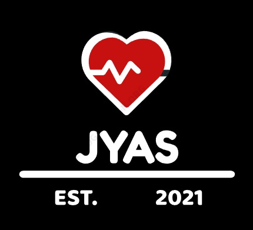
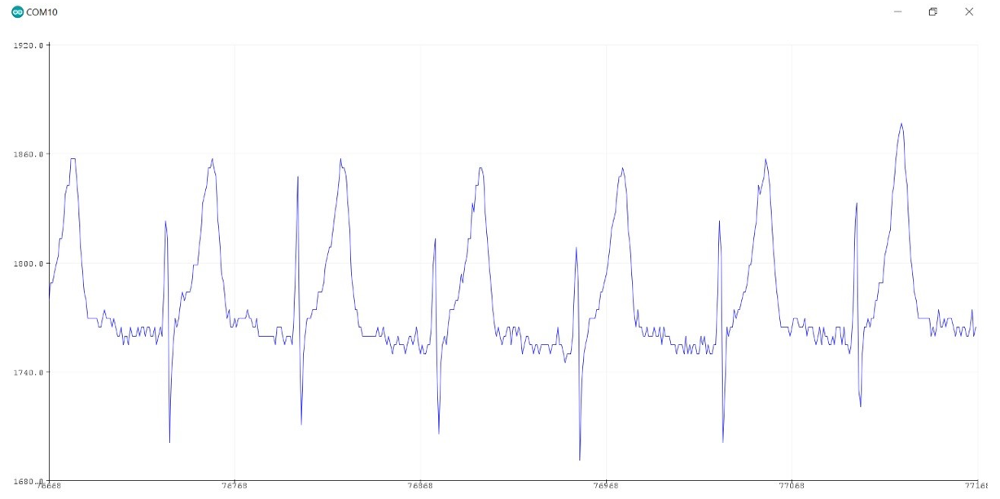

DESARROLLO DE PROTOTIPO FISICO
Pechera Smart LPM+TC

Se desarrollará un prototipo wearable de una pechera para monitoreo de signos vitales (frecuencia cardíaca y temperatura corporal) con el fin de prevenir los golpes de calor, principalmente en el grupo de adultos mayores. Muchas de estas muertes pudieran prevenirse con un monitoreo constante. El resultado es que el usuario podrá usar el prototipo de manera cómoda y sencilla durante el día y recibir alertas en caso de presentar síntomas de golpe de calor, además de tener guardado un registro de los signos vitales de todo el día para ser posteriomente revisado por el médico.


